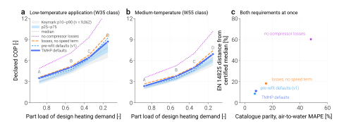

Where the defaults come from¶
TMHP decides a lot on your behalf. Hand it a capacity and a refrigerant and it produces heat-exchanger conductances, a compressor displacement, a rated air flow and three efficiency correlations. That convenience is the point of the library — but it is only worth having if each of those numbers can be traced to a published document rather than to somebody’s judgement, and if you can rerun the step that produced it.
This page is that trace. Every row links to the source and to the script that reads it.
The one rule behind all of it
Published literature reports the conductance, displacement or efficiency of particular machines. Nobody publishes a rule expressed per unit of capacity — which is exactly what a model that sizes its own components needs. So the numbers below are not taken from a paper. They are derived from populations: manufacturer catalogues that rate an entire product range at one declared condition, which makes models of different capacity comparable by construction. The citations are for the method, the rating standard and the correlation; the numbers are measured across many machines.
A consequence worth stating plainly: validating against a catalogue is never calibrating against it. No parameter below is fitted to any unit in the validation set.
Summary¶
Quantity |
Default |
Where it comes from |
Reproduce |
|---|---|---|---|
Outdoor coil conductance (air-to-air) |
|
1,414 component coils across two rating standards and six manufacturers, converted to the nameplate basis; independently checked against 12 heat pumps’ published coil geometry |
|
Indoor / outdoor conductance ratio |
|
Derived, not chosen: both faces are air coils, so the ratio is the duty
ratio |
|
Tank heat-exchanger conductance (air-to-water) |
|
5 K equivalent LMTD; inside the band Deutz et al. (2018) fit for a tank-mantle machine |
— |
Evaporator / condenser conductance ratio (air-to-water) |
|
Duty ratio |
|
Compressor displacement |
|
Pure fluid property from CoolProp at a declared rating point; rated speed inverted from nine machines with published displacement |
|
Isentropic efficiency |
|
Pressure-ratio shape of the electrical-to-isentropic product and its low-speed leakage interaction, fitted within machines on standalone compressor data (76 machines, 131 speed records); divided by the electro-mechanical efficiency so the product is reproduced |
|
Volumetric efficiency |
|
Clearance re-expansion plus the extra leakage fraction at low relative
speed |
|
Electro-mechanical efficiency |
|
Saturating drive-loss shape at the drive-only floor measured by
Ossorio & Navarro-Peris on three inverters, a motor-load factor
|
|
Rated outdoor air flow |
720 m³/h per kW (air-to-air), 540 (air-to-water) |
Manufacturer specifications for the respective product classes |
— |
Every Reproduce entry is a module under validation/extraction/ or
validation/compressor_maps/:
uv run python -m validation.extraction.<name>
uv run python -m validation.compressor_maps.<name>
The compressor coefficients are frozen as version v2026-09-24
(tmhp.compressor_efficiency.COEFFICIENT_VERSION); the archive under
validation/coefficients/v2026-09-24/ holds the data list, the fits, the
cross-validation, the selection table and the isentropic/electro-mechanical
split. The previous version v2026-09-15b is kept alongside for the
before/after comparison.
Heat-exchanger conductance¶
The problem¶
AirSourceHeatPump generates both coil conductances from a single declared
capacity. What has to be established is therefore a capacity-normalised rule
and a ratio — not any particular machine’s conductance. Before this work the
code carried hp_capacity / 10 and a ratio of 0.8 with no citation
anywhere, in the source or in the manuscript.
Why catalogue inversion is not a fit¶
When the refrigerant side of a coil changes phase its capacity rate is unbounded, the capacity-rate ratio vanishes, and the LMTD and effectiveness-NTU descriptions of the coil become the same equation:
A catalogue that declares duty, air volume flow and a rating temperature
difference therefore pins the conductance exactly. There is no parameter to
choose, so the result is either right or the table was misread — and a misread
column almost always pushes the effectiveness outside (0, 1), which the
code refuses. validation.extraction.dt_convention checks the identity
numerically over NTU 0.2–5.0.
This also settles a question that looks like it needs a convention: it does
not. UA/Q is the same number whether you compute it on an LMTD or an
inlet-end basis. Only the outlet-end approach temperature differs, and that
converts exactly through the NTU. All conductances here are reported as an
equivalent LMTD, which is why they can be compared across sources at all.
What the catalogues say¶
Rating standard |
Models |
Manufacturers |
Air flow [m³/h per kW] |
|
Equivalent LMTD |
|---|---|---|---|---|---|
EN 328 SC2 (evaporators) |
352 |
Alfa Laval · Güntner ×2 · GEA Searle |
584 |
0.190 |
5.28 K |
ENV 327 (condensers) |
1,062 |
LU-VE · Alfa Laval |
240 |
0.146 |
6.86 K |
Two standards written by different committees for different applications,
adopting air flows per kilowatt that differ by a factor of 2.4, place their
product populations in the same band of conductance per unit duty. That
agreement between the standards is the evidence. A regression through them
would mean nothing: inside a single standard UA/Q and air flow are linked
by an identity rather than a trend, so the points lie on a curve and a line
fitted through two such curves is an artefact.
A claim withdrawn
An earlier version of this work reported a pooled regression of UA/Q
against air flow — slope −0.020, R² 0.001 — as evidence that the two are
unrelated. That was wrong for the reason just given, and it is withdrawn.
What survives is that the two bands overlap, which is circumstantial. The
proof is the geometric route below, which is bound by no rating identity at
all and lands in the same place.
From the band to the default¶
The nameplate is the indoor coil’s cooling duty; the outdoor coil rejects
that duty plus the compressor work. A rule written against the nameplate has to
carry 1 + 1/EER explicitly — 1.29 to 1.35 across the reference units.
Skipping it misses by about 30 %. Applying it to the condenser band gives
UA/Q_cool = 0.19, that is hp_capacity / 5.
Adding the second condenser manufacturer late in this work was a useful test of how settled that is: it moved the condenser median by 5 % and the rounded default not at all.
The independent check¶
Trane prints, for every Precedent packaged heat pump, the outdoor coil’s face area, row count, fin density and tube size together with the outdoor fan flow and the rated capacity. That is enough to compute the conductance directly from a published air-side correlation — Wang, Chi & Chang (2000), already cited by the manuscript — with Schmidt fin efficiency, without reference to any component catalogue. The two routes share neither inputs nor method.
Over twelve units of two refrigerant generations the geometric route gives
UA/Q_cool between 0.119 and 0.206, a median of Q/6.8, and implied
condensing temperatures of 47–55 °C at the 35 °C rating point, which is the
product class’s ordinary range. Its largest declared quantity is the
refrigerant-side film coefficient: at 2500 W/(m² K) the route gives Q/6.8,
and with that resistance removed entirely it gives Q/4.3. The band result
sits between the two.
That is why the band route sets the default: it needs no assumption about the
refrigerant side at all. The geometric route is the corroboration, and
validation.extraction.trane_geometry prints the sensitivity of its answer
to every quantity it had to declare rather than read.
How wide the band is, and what that costs you
Q/5 is a median. On the nameplate basis the population it came from
spans ``Q/3.3`` to ``Q/7.1`` at p10–p90, and that width is real
hardware, not measurement noise.
The validation set shows what it costs. Backing the conductance out of each
machine’s own rating point, the five Daikin splits imply Q/3.7 to
Q/6.0 — all inside — while the two Fujitsu splits imply Q/7.6 and
Q/8.5, just outside the low-conductance end. Their nameplate
efficiencies differ accordingly: EER 5.41 down to 3.23 across the seven.
So a single vendor-neutral default describes a typical machine near the
efficient end of current practice, and will over-predict a
lower-efficiency product line. If you know the machine, pass
UA_ou_rated. Validation decomposes the rest of that residual, which
is not all conductance.
Note
Quote the band on the same basis as the rule. Component catalogues
report conductance per unit of coil duty (UA/Q 0.108–0.230); the
rule is written against the nameplate, and the two differ by
1 + 1/EER = 1.307. An earlier version of this page carried the
median across but not the band.
Where this does not apply at all
The rule is established for dry, round-tube-plate-fin outdoor coils of packaged equipment. Frosted operation, microchannel coils and the residential mini-split product class lie outside the evidence. The mini-split exclusion matters in practice: TMHP’s rated air-flow default of 720 m³/h per kW is a mini-split figure, while the geometric evidence comes from packaged units at roughly half that. The two defaults presently point at different product classes, and that is an open item rather than a resolved one.
Compressor displacement¶
The machine has to move enough refrigerant to carry the nameplate duty at the nameplate condition:
Both \(\Delta h\) and \(\rho_1\) come from CoolProp at a declared rating point, so the dependence on the working fluid is pure fluid property rather than a tabulated coefficient. That dependence is not small: per kilowatt of nameplate the displacement runs from about 3.9 cm³/rev for R32 to 10.4 for R1234yf. The constant this replaced took no account of the fluid at all.
The rating point is declared per equipment class — EN 14511 A7/W35 for air-to-water, ISO 5151 T1 for air-to-air — and the rated speed is the one quantity that carries real uncertainty, since the result is exactly inversely proportional to it.
For air-to-water it is not a guess. Inverting the relation against the nine Panasonic Aquarea units whose compressor displacement is published by the manufacturer’s compressor division gives a median rated speed of 42 rev/s, and
Nameplate |
R32 |
R290 |
R410A |
|---|---|---|---|
9 kW |
33.6 rev/s |
32.8 |
36.2 |
12 kW |
44.9 |
43.7 |
48.3 |
— at a fixed capacity the three refrigerants agree within 5 %. The physics carries the fluid dependence on its own. The scatter that remains is the manufacturers’ practice of sharing one compressor across adjacent capacity steps: in all three of those product lines the 9 and 12 kW units use the same machine, which no continuous rule can reproduce.
For air-to-air the evidence is thinner. Daikin’s SL-series service manual
publishes rated compressor frequency in place of displacement — 52 rev/s
cooling for the 2.5 kW class, 72 for the 3.5 kW class — and no displacement is
published anywhere to check the result against. A search of five data books,
three service manuals and two specification sheets, about 90 MB, returned no
displacement for any Daikin, Fujitsu or Trane unit; every cm³ in those
documents is an oil charge. This is the weakest link in the chain and is
treated as such.
Tip
A displacement error is second order for steady-state COP: the speed solver
absorbs it into speed, and the result moves only through the speed
dependence of the efficiencies. Where it matters is the modulation envelope
— displacement and rps_min jointly fix the lowest duty the machine can
deliver. If you know your machine’s displacement, pass V_cmp_ref.
Compressor efficiency¶
A variable-speed compressor loses work in three distinguishable places, and
TMHP keeps them separate because they act on different outputs: the isentropic
efficiency sets the discharge enthalpy (and so the heating duty), the volumetric
efficiency sets the mass flow, the electro-mechanical efficiency sets the
electrical input. The correlations live in tmhp.compressor_efficiency
and are shared by every model.
Compressor data, not heat-pump data¶
The coefficients are fitted to standalone compressor performance and then frozen. Heat-pump catalogue COP is never used to fit them — a catalogue COP mixes compressor, conductance, fan and latent effects, and fitting the compressor to it would let a conductance error hide inside an efficiency coefficient. The catalogue set is what the assembled model is checked against afterwards (Validation).
Source |
Machines |
Speed records |
What it gives |
|---|---|---|---|
Copeland Online Product Information — AHRI 540 coefficient sets of the ZPV / XPV / YPV / ZHV / YHV variable-speed scrolls |
63 |
96 |
Capacity, power and mass-flow polynomials at two or three rated speeds
per machine ( |
1 |
5 |
48 calorimeter tests of an R-134a scroll, 35–75 Hz, with measured discharge temperature — the only rows that split the product under TMHP’s own definition |
|
1 |
4 |
Published efficiency functions of an R-290 scroll (ZHV046), evaluated on their fitting envelope, 1800–5400 rpm |
|
Highly rotary catalogue 2024 |
8 |
1 |
R-290 inverter rotaries at their ASHRAE/T rated point, 3600 rpm — a level anchor for the rotary type, no speed information |
3 |
18 |
Manufacturer map polynomials of three inverter rotaries (Mitsubishi,
SANYO, Hitachi; R-22 inferred) at 30–120 Hz, |
Every point is reduced to the same three quantities with CoolProp at the
source’s own rating convention: eta_vol = ṁ / (ρ_suc V n),
eta_oi = ṁ Δh_is / P_el and, where a discharge temperature is printed,
eta_isen = Δh_is / (h_dis − h_suc). Fixed-speed machines, grid points
outside a 15–60 K lift or a 1.5–8 pressure ratio, and machines whose printed
displacement fails a rated-point volumetric check are excluded and listed in
the archive.
What the data identify¶
Power tables identify the product eta_isen · eta_em, not its factors.
Within each machine the low-speed loss of the product grows with the pressure
ratio – about −9 % at PR 2 and −30 % at PR 4.5 at a quarter of rated speed
across the Copeland set – the signature of internal leakage, whose fraction
goes as the pressure difference over the speed. The product is therefore
fitted as g(PR) · (1 − c (PR − 1) max(0, 1/n* − 1)) with the shape
identified from within-machine contrasts (fixed-effects estimator), because two
thirds of the rows sit at rated speed and the between-machine level spread
would otherwise dilute every speed term. The split into the two factors is set
from the Cuevas & Lebrun rows with measured discharge temperature (29
inverter-fed rows, n* 0.7–1.5): eta_em = 0.941 · s(n*) · m(PR) at PR 3 and
n* 1, where the drive term s is anchored on the drive-only floor of the
three Ossorio & Navarro-Peris inverters (n0 = 0.026; the one-machine total
of 0.075 over-states the population’s low-speed loss by a factor 2.7 in the
within-machine check) and m(PR) is the motor-load term. Whatever the
product demands beyond that lands in the isentropic efficiency.
The speed penalty measured across the Copeland set does grow with pressure ratio (the interaction term is statistically significant across 49 machines). Carrying it would need a speed term in the isentropic efficiency; it buys 0.05 pp of cross-validated error once the rotary maps are in and is kept as a documented extension, not adopted. The correlations only become more complex when the data demand it clearly, and 0.05 pp against a between-machine spread of 7 pp is not that.
A speed term must also be identified by the machines that carry it. The three 2004 rotaries are the only maps above 1.5× rated speed, and their whole level sits 27 % below the population; pooled, that level shift looks like a high-speed roll-off (a fitted 28 % at twice rated speed, and 0.8 pp of cross-validated gain). Inside each of those machines the trend is a tenth of the fitted magnitude. Rule R4 therefore compares every added speed term with the within-machine trend of the machines that see it and accepts the term only if they show at least two thirds of it; the roll-off fails (0.12), the low-speed drive loss passes (2.2 — the machines show it more strongly than the pooled fit does). The form keeps a zero-valued roll-off coefficient so a second high-speed source can switch it on.
Selection¶
Five volumetric and fifteen product families were compared by
leave-one-compressor-out cross-validation: refit without each machine, predict
it, pool the error weighted so every compressor × speed record counts once.
A family is accepted over its simpler parent only if each extra coefficient
buys at least 0.1 pp of cross-validated MAPE, no stratum with three or more
machines gets worse by more than 2 pp or 25 %, the delivered duty
n · eta_vol stays monotonic in speed on the whole grid, and any added
speed term is seen within the machines that identify it (above).
Efficiency |
Adopted form |
LOCO MAPE |
Pre-refit (v1) |
|---|---|---|---|
Volumetric |
|
5.95 % |
5.88 % |
Product |
|
11.72 % |
12.21 % |
The product’s pressure-ratio shape peaks near PR = sqrt(C/B) ≈ 2.8 — the
built-in volume ratio of an air-conditioning scroll — and falls on both sides:
under-compression below, over-compression and leakage above. Its speed factor
is the saturating drive-loss form Ossorio & Navarro-Peris fit to 185 inverter
measurements, here with the time constant fitted on the whole set; an
exponential alternative scored within 0.06 pp (inside the 0.1 pp resolution
the acceptance rule itself uses) and the form with the physical precedent was
kept. The pooled error of the product is dominated by the three R-22 rotaries
(32 % in their stratum against 9 % for the scrolls): their level, not their
shape, is what the population does not share. The volumetric speed term is one-sided (no bonus above
rated speed): the Copeland set loses about 5 points of volumetric efficiency
at a quarter of rated speed, a third of what the pre-refit leakage term had
extrapolated from one machine.
Speed is read relative to the machine’s rated speed, n* = n / n_rated: a
drive and motor are sized for the speed the compressor is rated at, and a
shape measured on one machine transfers as curvature about that point, not as
an absolute speed. The heat-pump models bind their own rated point (40 rev/s
air-to-water, 60 rev/s air-to-air, tmhp.compressor_speed).
What is deliberately absent¶
No low-load cliff, and no refrigerant-specific coefficient set. The residuals were stratified by refrigerant, compressor type, source, speed and pressure ratio; no stratum with three or more machines asked for its own coefficients. The rotary type is represented by eight modern R-290 rated points and three 2004 R-22 maps; the modern rotaries sit at the population level (7–9 % in their stratum), the 2004 machines 27 % below it, so the shape carries over and the level of an old induction-motor rotary does not. A modern multi-speed rotary map is still the first data gap (see the report archive). See Part-load behaviour for why inventing a low-load roll-over would contradict the certified measurements.
Does the coefficient set survive both tests?¶
The three correlations were fitted on compressor measurements, not on heat pumps. Whether that was worth anything is a separate question with two halves:
Shape. EN 14825 lowers the required duty and the flow temperature together across four test points, and Heat Pump Keymark publishes what real machines declare at each of them. A coefficient set can be checked against the certified population (Part-load behaviour).
Level. A set can sit on the certified median and still miss every individual machine. That is what the catalogue parity set answers (Validation).
Four compressor descriptions were run through both, identically:


(a, b) The certified trajectory, low- and medium-temperature application. (c) Both requirements at once.¶
Description |
What it is |
Parity MAPE (air-to-water) |
Bias |
|---|---|---|---|
|
all three efficiencies pinned at 1.0 — what ASHP did before this work |
47.9 % |
+47.9 % |
|
the adopted correlations frozen at their rated point, no speed dependence |
15.4 % |
+12.2 % |
|
the pre-refit defaults: |
7.3 % |
-1.6 % |
``defaults`` |
what TMHP ships — coefficients ``v2026-09-24`` |
8.2 % |
+1.5 % |
Parity figures are the ten adopted air-to-water units (153 points); the held Fujitsu catalogues are excluded from every headline.
Three things to read off it.
The coefficients carry most of the model. An ideal compressor is 47.9 % out on the catalogues; removing only the speed dependence costs 7.3 points of MAPE.
The shape passes, at every configuration. Across fifteen combinations of
capacity, refrigerant and sizing ratio the modelled COP rises at every step
A → D in all fifteen low-temperature runs (96.9 % of the 9,062 certified
low-temperature records do the same), and the A-to-D gradient lands inside the
certified p10–p90 in all thirty runs: median 2.48 modelled
against 2.63 certified for the low-temperature application, 2.93
against 2.86 for the medium-temperature one. The refit made the low-temperature
gradient flatter than before (2.70): the fitted product falls
below a pressure ratio of about 2.5 — under-compression in a scroll with a
fixed built-in volume ratio — and point D runs near PR = 1.6.
The level sits above the median, and the sign is predicted. Read as percentiles of the certified population, the low-temperature trajectory sits at the 94 / 91 / 69 / 83th percentile at points A / B / C / D and the medium-temperature one at 85 / 93 / 88 / 89. Certified COP is measured with defrost and, at the light points, with on/off cycling; TMHP models neither, so a model above the median is the expected direction. Points A and B sit near the 90th percentile — one decile higher than the pre-refit set, the same signal as the +1.1 % air-to-water parity bias: the compressor population the coefficients come from is the efficient side of the heat-pump population. Neither result moves a coefficient; both are recorded (Validation).
What changed on the medium-temperature trajectory
The previous edition of this page marked point C of the medium-temperature
application as an artefact: every description dropped to 77 % of the
certified median there because the operating-point search starved the
outdoor coil below the compressor speed floor. That search now scores
candidates by electrical input per unit of heat delivered
(tmhp._opt_utils), and the point sits in line with its neighbours
(88th percentile). See Part-load behaviour.
Reproduce both halves with:
uv run python -m validation.en14825_seasonal_trend.air_to_water
uv run python3 scripts/validation/en14825_verdict_figure.py
Provenance¶
The source documents are archived locally but not committed: publisher PDFs
and supplementary datasets are not redistributable. The tracked half is
validation/registry/sources.yaml, which records what each document is,
where to obtain it and the SHA-256 of the copy the scripts were run against. A
reader who obtains the same document from the manufacturer and gets the same
checksum is running on identical bytes, and everything under
validation/data/ follows from those bytes by the scripts in
validation/extraction/.
See also
- Validation
Catalogue parity results, unit by unit.
- Part-load behaviour
The part-load trend, and the certified data it is judged against.
- Adding a catalogue
How to add a unit and have all of it update.
Note
The numerical fits and validation results on this page archive the 2026-09-24 model. Production compressor defaults now follow the BITZER three-efficiency Notion study (2026-10-06), with three independent quadratic fits in pressure ratio and absolute shaft speed N [rev/s]. Historical scores are not validation scores for the new defaults.